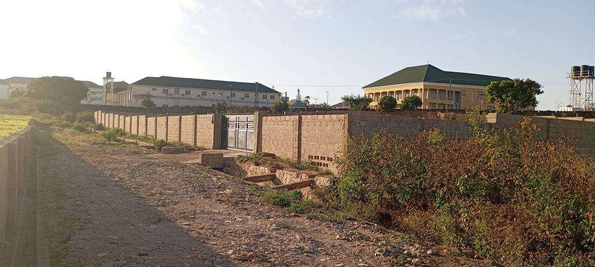
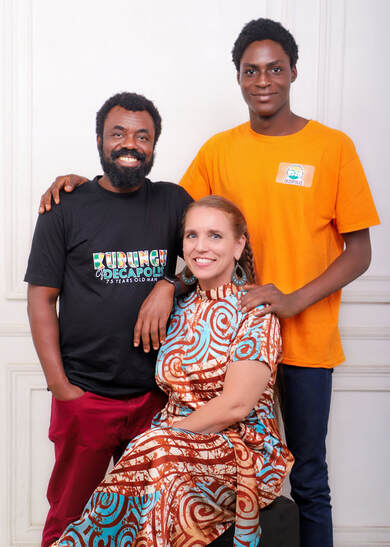
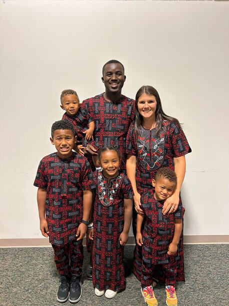
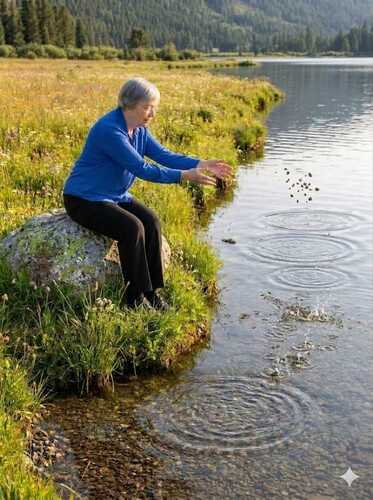
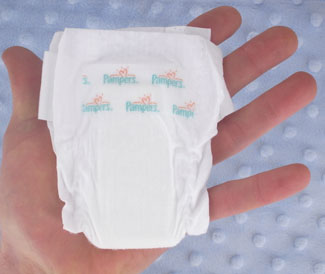
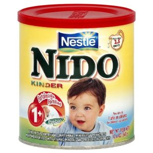
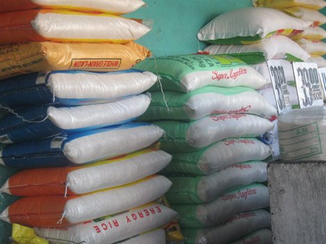
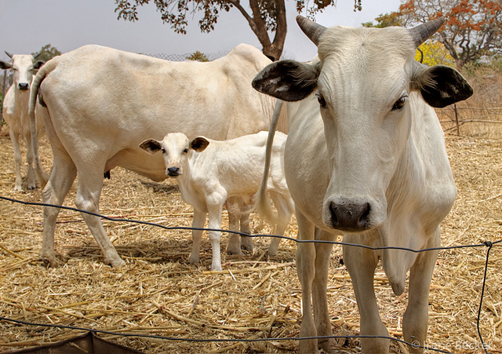
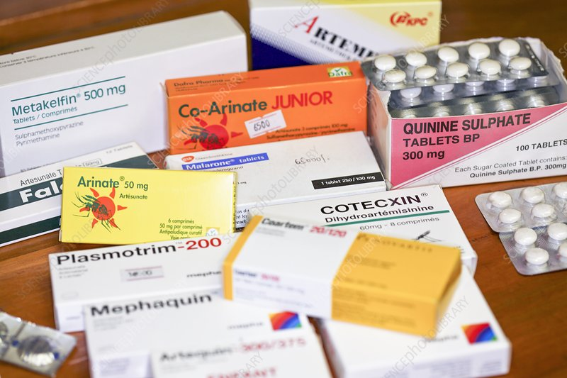

Jos, Nigeria
Alternorm Ministries
Arts and media. Begun in 1997 as Joi Ministries. The fence and gate on this land are in place, toward offices, studios, storage, and an event center.
We are a group of Bible-believing Christians with a common passion who have become partners for a greater vision.
“Just as there are many parts to our bodies, so it is with Christ’s body… for we each have a different work to do… each needs all the others.”
Romans 12:4–5
Our mission
The vision is to share the grace of the Lord Jesus Christ, the love of the Father, and the unity of the Holy Spirit with as many people as possible. (2 Corinthians 13:14)

Jos, Nigeria
Arts and media. Begun in 1997 as Joi Ministries. The fence and gate on this land are in place, toward offices, studios, storage, and an event center.

FCT Abuja and Kogi State
Regenerative agriculture for small-scale farmers. The page says more than 1,200 farmers have been trained since November 2023, and $35 sends one person to a training.

Kogi State
Moses and Alexis Abraham mentor Nigerian young men ages 14–24. The vision is centered on Kogi State.

Global Ripples of Grace
Encouragement and training, including with ProMETA. The Reed page also mentions bank bill pay and monthly gifts.
Otutulu and Lokoja
Orphanage homes, a Christian academy from pre-K through 12, and a medical center. Surrogate mothers care for up to 12 children. Monthly updates on the current site describe more than 400 residents. Ruth Carlson is the liaison.
Central Nigeria
CMML college training pastors. Founded in 1984, renamed in 1995 after Dr. Isaac Ogohi. More than 250 graduates. Nigerian faculty. Liaisons Cristy and William Millington.
Igala readers
Booklets that help readers become fluent in the Igala Bible they already have. English and Igala fable and Bible booklets, $5 each plus $1.25 shipping. Books 1, 2, and beginner. The first Igala Bible was published in 1970, with an easier translation in 2020. Esther Nordman is the liaison. Memo line: ILP.
Costa Rica
Manuel and Yorleny Porras, through CEI Capacitando Entre Indígenas, have trained indigenous pastors and leaders since 2008 in the Bible and practical skills. Judy Reed is the liaison.
Nigeria
Groups have served in Nigeria for a number of years, often alongside Ministry of Mercy. Testimonies are on the current site.
Giving page
The public page does not describe the work. Pat Davis is the liaison.
Undescribed
The public page does not describe the work or name the place.
The orphanage grocery asks for a shipping address, then says the food will not be shipped. It is purchased in Nigeria for Ministry of Mercy. These are the items and prices on that page. James 1:27 is the verse printed there. This sample does not take an order.





A tax-deductible gift is one way to become a partner. On the live site, use the donate button and name the ministry, or mail a check to Partners In Joy, Inc., PO Box 380631, Duncanville, Texas 75138. This preview does not accept the gift.